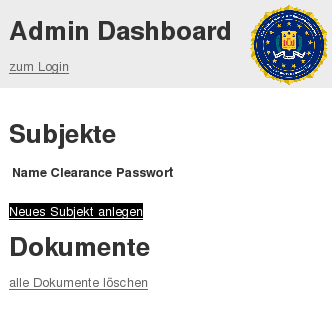
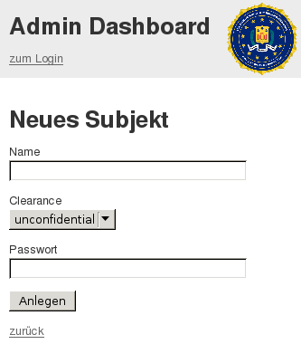
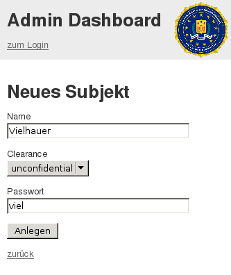
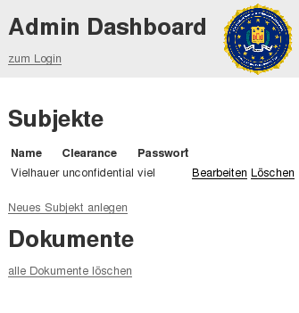
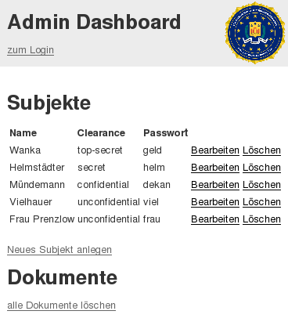

Um ein Subjekt zu erzeugn, klicken Sie im Dashboard auf "neues Subjekt anlegen"
Es öffnet sich folgendes Fenster. Nun müssen Sie sich einen Nickname und ein Kennwort geben. In unserem Beispiel muss dafür unser Professor Vielhauer her halten.
Wir füllen also die Felder mit unseren Daten aus. Sie müssen keine Angst haben dass Sie das Passwort vergessen könnten. Es wird im Dashboard im Klartext angezeigt. Da es sich hierbei nur um einen Demonstrator handelt, wurde an der Sicherheit hier ein bisschen gespart. Abschließend in dem Clearance-Drop-Down-Menü Ihre gewünschte Sicherheitsstufe aus. In unserem Fall genügt uns unconfidential. Zum erzeugen wählen dann nur noch "Anlegen" aus.
Nun erscheint im Dashboard unser neues Subjekt!
Und so könnte es aussehen wenn Sie ein paar mehr Subjekte erstellt haben...
Um nun ein Objekt mit Ihrem Subjekt zu erzeugen, müssen Sie sich mit einem Account einloggen. Klicken dazu auf "zum Login". Objekte erzeugen